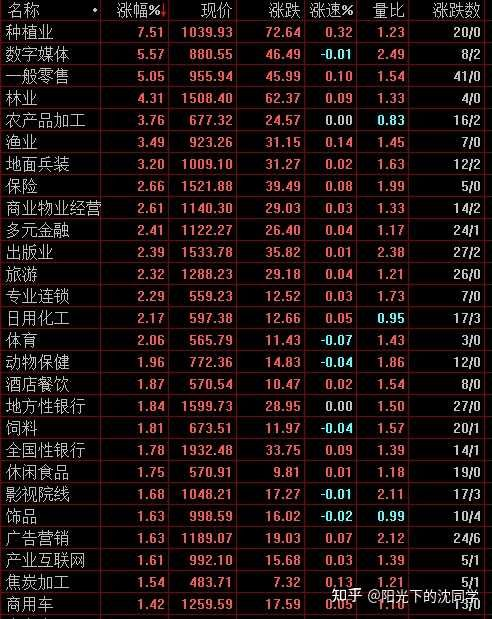
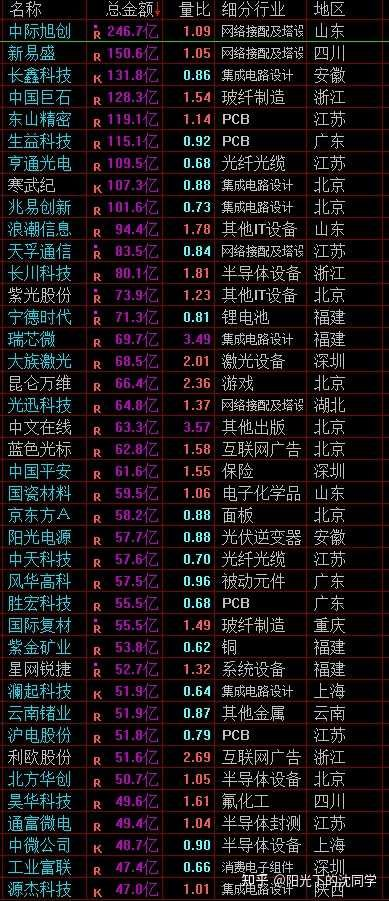
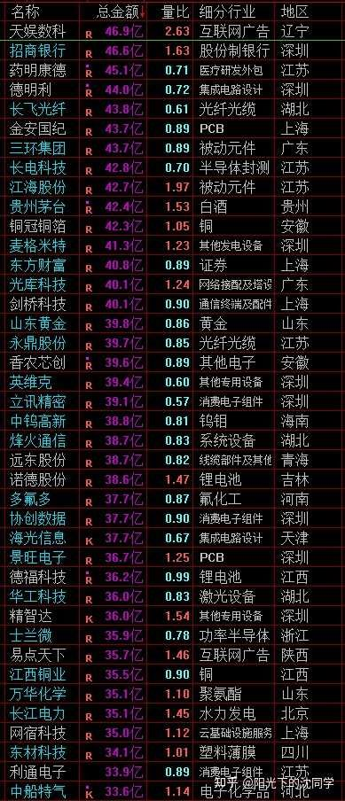
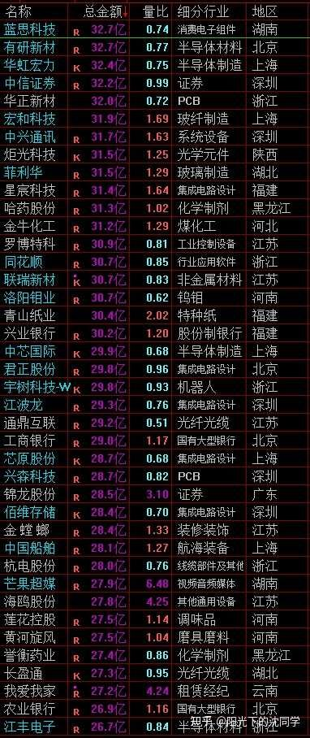

作者的核心逻辑在于揭示‘指数虚假繁荣’与‘存量资金博弈’的背离。市场目前呈现出大盘权重股（金融等）护盘维持指数高位，但中小盘个股活跃度下降、赚钱效应减弱的特征。这种背离意味着市场缺乏增量资金推动，指数的每一次冲高都面临获利盘回吐压力。作者主张通过降低仓位、锁定现金流来应对这种‘指数好看但个股难做’的结构性风险，本质上是防御性策略，旨在通过牺牲潜在的短期反弹收益，换取在市场回调时拥有足够的低位布局资本。
很多股票走势越来越弱，股性大不如前，说明这样的行情赚钱比过去更难，一定要重视风险，控制好仓位，不要乱加仓
因为最近大蓝筹还可以，尤其是大金融，他们是权重，对上证指数影响比较大
大部分投资者是比较关注上证指数的，上证指数在这些权重影响下，看起来确实走势还可以，经常到3950以上，甚至昨天还盘中突破了3994的前期高点，当然突破的不多，就刚刚好到了3995附近，但也能说明指数没有那么弱
这样就容易给对股性，资金面方面不是很关注，研究不深的投资者一种假象
感觉指数不错，可能上涨会继续，这种假象很致命
在大部分股票走势越来越弱，股性不佳，且资金面很弱，大资金不怎么活跃，都是中小资金在交易的时候，还在3950以上活跃，这个时候加仓很容易亏钱
这也是过去一段时间一直复盘都有提到的，存量资金博弈注【本质逻辑】市场没有新钱入场，上涨的钱只能从下跌的板块里抽出来，导致市场呈现‘跷跷板’效应，难以形成普涨行情。【新手提示】看到指数上涨不要盲目乐观，要看成交量是否配合，若缩量上涨，极大概率是诱多。，资金面不足以支撑行情上涨，但上证指数短期被大盘股维持的还可以，要是这种时候你没办法看破行情的孱弱，去冒然加仓，去满仓，那么潜在风险巨大
资金面非常重要，可以看到市场的本质，看到胜率，大家千万不要忽视
目前市场筹码综合区间是3950-3650区间，只要资金面没有好转，赚钱效应不够好，那么就算短期进攻3950以上，到4000附近，最终还是会很快下来，维持这个观点不变
在上涨的时候一定要锁定利润，获利了结注【本质逻辑】在市场情绪高涨、指数触及阻力位时，主动卖出获利筹码。这是为了将浮盈转化为实实在在的现金，防止行情反转导致利润回吐。【新手提示】不要总想着卖在最高点，在行情不明朗时，落袋为安是保护本金的最佳手段。，优化好持仓
总仓位尽可能低于55%，预留足够多的现金，这样才能应对未来可能的下跌趋势，大跌行情，在杀跌中慢慢寻找低位优质筹码的布局机会，千万不要在这种资金面弱，指数还拉升的时候去加仓
一旦跌下来，可能很多个股会错杀，你手里没钱非常被动
我自己这么多年实战经验来看，这样的行情现金是最重要的
希望大家也可以感知到目前盘面的难做，好好优化仓位，切不可上头，尤其是3950以上一定要清醒理性一点，每次开仓都深思熟虑
我自己是选择了清仓短线账户
长线账户也把感觉一般般的都先卖掉，锁定现金流，先配置债券，静观其变
我没办法预测行情，就是在行情不太好做，我自己没有信心去做的时候就收回现金，只留最信得过的长期底仓，成本非常低的红利资产，美股，黄金这些，其他都能不要的就暂时不要了，以后行情好做了再卖出债券慢慢买入股票
不管是什么资产，跌了都可以买，只要手里有钱，行情好做，就都是机会
现在这种行情勉强去做，没什么意思
就算后面有什么行情，对我自己来说胜率不够好，所以我选择保守一点
虽然现在舆论来看不错，很多人看好未来牛市，但我坚守自己的盈利模式，我认为行情很难做，资金面很差，所以我选择休息
美股也在高位，一旦跌下来对全球股市也不是好事，跌下来也需要钱去买入，所以多留现金是我自己认为最好的策略
当然行情不是很好做，资金面情况不对劲的情况也聊了很久，大部分读者肯定是都明白的，就是看具体能不能把仓位优化好，尽快把自己持仓整体风险降下来

展示了板块涨跌幅与量比情况。多空博弈点在于：虽然部分题材板块（如种植业）涨幅居前，但量比数据并不统一，显示出市场缺乏持续的合力，更多是游资在小市值板块中的短期试探，而非大资金的趋势性建仓。
每天原创不易，读者朋友千万不要忘记点赞支持一下
正所谓先赞后看，腰缠万贯
大家可以先点一波赞，我们再继续慢慢聊
祝点赞的朋友福寿无量，天天开心
聊完了上面行情的主要实战策略思路，我们来聊聊细分的盘面情况
现在其实很多都是游资短期博弈机会，很多基本面一般般，但有一些利好的方向游资在玩
比如说很多文化，影视，传媒这些，包括农林牧渔这些，都是游资喜欢做的
这种持续性不会很强，农林牧渔长期来来回回波段机会挺多，原因每周的深度复盘有聊过，但也不能追高
文化，影视，传媒基本面很难好起来，每次都是大跌以后突然爆发，然后其他时候都是继续下跌，挺难做，持续性不会很好
整体是没有什么大机会的，我个人认为不如低位的新兴行业优质科技
也不如很多细分领域产品爆发不错的AI产业链方向，这些都是企业，基本面没有问题的，真的跌下来是机会更大的
港股在成分股调整之前也肯定是波动比较大的，这方面也有机会，这些比游资博弈注【本质逻辑】指短线资金通过快进快出，利用题材炒作制造波动。这类资金不看长期基本面，只看短期情绪和资金流向。【新手提示】游资票往往‘来得快去得快’，新手缺乏信息优势和反应速度，极易在追高后被套。机会好做

提供了估值水位参考。这是一种心理防御机制，通过设定‘泡沫、高估、合理、低估’的量化标准，帮助投资者在市场狂热时保持冷静，在市场恐慌时敢于低吸，避免被市场情绪左右。
大家有任何投资疑问，有什么想交流的都可以付费咨询，想单纯支持一下也可以
【在知乎上我的主页咨询即可，没有任何群，不搞私下小圈子】
家庭资产长期稳健配置方案分享，仓位优化，估值分析，行业分析，心态调整，各种投资学习技巧都可以咨询
大家的支持和尊重是我创作的最大动力
感恩大家每天的付费咨询和打赏，感谢大家对知识的尊重，感谢大家对我的支持
欢迎提问
适合职业投资者，10年以上经验老股民，基本功极其扎实投资者的实战分享
今天主要聊我最新持仓的方向比例变化，所以其他内容明天再聊，没有那么多时间，还需要继续筛选A股的股票池
我最近几个月整体持仓明显有减少，各种核心持股方向变化不是很大，现在来详细聊聊思路
金融：
15%——10%
金融持仓减少了一波，金融持仓表现比较好，有点超预期，在拉升的过程中把券商清仓，保险和银行都减少了一点
金融作为红利底仓依旧看好，但因为成长性一般般，上涨过快性价比就不如其他红利，所以会选择控制控制仓位
尤其是券商板块，主要做波段为主，全球股市在高位，券商也不太好做，而且前段时间也上涨确实不少，不适合再继续持仓
长期来看我很喜欢金融，因为金融的龙头企业很稳定，只要等到了大跌机会，你足够熟悉这些企业的股息，估值逻辑，赚钱很容易，胜率极高，企业也不容易暴雷
唯一缺点就是有点慢，券商也是爆发一波就休息很久的，银行主要熬长期股息复投，保险也是波段比较大的
对新手投资者来说金融没有那么好，但一旦上手了，有了一批自己熟悉的自选股，金融板块绝对是长期收益率贡献最稳定的方向
所以我在金融板块方面一直会有长期底仓，而且只要有大跌，我是必买金融板块的，确定性极高
不管是美国，港股，还是A股，金融都有很多优质龙头股可以选择，市场选择空间也大
我是很推荐大家去挖掘金融板块机会，我自己这些年实战经验来看，金融板块值得配置，值得长期研究，不会浪费你时间，仓位控制好一点，对龙头股了解多一点，胜率就起来了
只要你金融板块做的好，长期收益不比ETF差
现在大家也知道ETF长期收益是比90%以上个股好的
在这样的大环境下，金融方向我依旧认为值得关注
当然优质的金融ETF也一样值得配置
金融作为稳健的方向，我个人会一直标配，就是仓位波动罢了，基本上长期7%-8%以上持仓，估值非常低的时候持仓15%-18%，差不多就是这样
消费：
28%——31%
消费整体加仓了一点，目前优质的消费龙头全球都估值很低，我认为配置价值极大，叠加龙头企业分红也稳健，我个人非常看好
消费和金融一样都是长期很稳健的红利资产，美股，A股，港股的消费其实都有很多选择
港股的新消费更好，很多龙头消费暂时只在港股上市，美股全球消费龙头很强，值得长期股息复投，A股消费波动大，跌起来凶，牛市也爆发力大，当然分红也越来越稳健
消费目前全球估值洼地，很值得基于大仓位
核心思路就是不管你投什么股市消费，一定要现金流好，分红稳定，行业龙头，不能是业绩一直下降那种，或者是分红能力不高那种，那不是最佳选择
消费其实也是股息+股价双收的长期策略，没有股息的消费实际上也是博弈短线，那就不好玩，还不如去玩科技
消费投资对基本面选择，投资者回本方面一定要吃准，要高标准，尽可能不碰二三线普通消费股
而且尽可能多关注利润好的，ROE高的那种中高端消费，他们利润更稳定，分红更好
消费和金融一样，也是我长期底仓，不管什么市场都喜欢配置消费
因为股性比金融好，所以消费我经常底仓都不会少于10%，多的时候各种资产加起来30%左右，消费进攻性更好，金融防御性更好，但都是那种长期你只要花时间，认真去研究，都会有长期大回报的行业
消费龙头很多都是全球经久不衰龙头，科技龙头其实很容易10年一换，真的要说长期投资，金融+消费非常非常值得研究
而且消费也离大家生活近，也容易调研，容易研究，产品你更容易理解，实际上更好去做
大家一定要重视消费板块，尤其是目前消费整体估值很低的时候
生物医药：
12%——13%
生物医药我经常提，创新药龙头也持仓很多年了，和金融，消费一样，生物医药也是长期牛股很多的方向，也是全球需求稳定，且未来老龄化严重需求会不断提升的方向
不过缺点就是很难研究，医药企业其实没有那么稳定，竞争挺激烈的，一些全球产品一旦没有了优势股价可能会崩
所以生物医药我是很喜欢配置的，也很关注，但只敢做自己熟悉的龙头，一般来说不会仓位特别大，而且医药企业主要看成长性赚钱，股息方面不是关键，长期安全度肯定不如消费和金融
医药很难研究，优质的ETF可能比选股更好，这个是门槛很高的方向，大家一定要认真筛选成分股好的ETF长期跟踪，不要自己乱买个股
医药目前整体也不贵，很多好公司值得关注，我自己也是长期看好，也会长期调研跟踪
国内创新药业务刚刚起步，发展空间巨大，值得配置
最看好的就是创新药的爆发力，股价上涨空间最大，然后是一些其实类似化工厂的龙头化学药龙头，他们估值确实便宜，主要是估值回归的收益，比较稳健，还有就是类消费类的医药企业，他们其实相当于也是消费，感冒，养生，跌打损伤，保健都会想到的龙头品牌，这种就很看分红了，可以把他们作为消费去看待，在非常便宜的时候也值得配置，这些方面也可以挖掘
当然未来最强的，最有想象力的肯定还是创新药
AI产业链：
10%——7%
AI产业链是目前最火的，全球投资最多的方向，其实我个人很喜欢，就是贵了，所以一直没有加仓机会
很多细分的AI方向也在关注，但没有上太多仓位，目前美股市场AI产业链业绩是最好的，是比较值得关注的
A股方面液冷，电力，AI电源，sst变压器等细分领域也有机会，港股的AI应用，互联网企业AI估值明显低于全球其他龙头企业，也有机会
主要就是关注这些方向，仓位不敢太高，慢慢观察，AI是大势所趋，但估值原因影响，暂时不敢乱加，好公司收藏起来在慢慢研究，有机会肯定会提升仓位
未来看好港股AI龙头的估值回归，A股核心零部件的配套机会，美股AI龙头科技的业绩继续爆发机会，这些是比较好的配置方向
能源，动力：
6%——9%
能源其实也是红利，很多央企垄断的能源电力这些都是可以长期股息复投的，也非常稳定，是不输很多红利ETF的，属于非常值得单独配置的方向
动力方面更多的是核心的电池产业链，这个也是未来不管是汽车，机器人，低空经济还是各种科技方面都用的上的，龙头企业主要在港股A股，这方面美股选择就不多，因为比较偏向于制造业
在估值比较低的时候我愿意长期去配置，加一点仓位
未来继续关注电池产业链龙头企业，能源方面龙头企业，是常春藤方向，生活离不开能源动力，不要忽视这个方向的长期投资机会
高端制造：
25%——25%
高端制造是我一直非常喜欢的，涉及面很广，尤其是出海龙头，我认为未来长期股价空间很大，所以高端制造方面我一直会给予比较大的仓位
这次虽然高端制造的持仓比例没有变化，但调仓换股比较多
半导体，航天航空，海工装备，工程机械，消费电子产业链，汽车产业链，大飞机，军工，还要很多很多利润不错，技术含量高的都是高端制造
这些选择空间很大，选择全球化发展比较好的龙头企业，其实收益是不错的
当然高端制造，医药这些不容易调研，不容易理解，肯定没有消费金融那么容易研究，但真的把高端制造吃透了，账户的收益率肯定是更高的
目前军工，工程机械，消费电子，汽车产业链里面都不少低位的高端制造好公司，值得关注，尤其是里面出海做的好的，在估值低的时候慢慢加仓胜率极高
航天航空，半导体这些偏贵一点，这些方面暂时没有大幅上仓位的空间，大飞机产业链在高速发展，可以多关注关注，未来肯定有很多牛股跑出来
A股选择空间很大，对于不怎么懂投资美股和港股的朋友，可以多在A股领域选择高端制造龙头股机会
高端制造是A股的王牌方向，选择空间巨大，很多其他科技龙头股都在美股，实际上A股的龙头都是给他们做配套的，也就是制造业，高端制造，把这些产业链吃透，选择龙头企业，在低迷的时候配置，股价弹性真的很大
大家都可以去研究研究
周期：
4%——5%
周期目前好公司都普遍不便宜
低位周期一些核心的资源矿产，化工化纤还有少量配置价值
整体来看周期方面之前爆发的比较彻底，后面会比较难做
低位周期可以多看看化工龙头，化纤龙头，他们还有机会
稀缺的矿产，矿业主升浪走的七七八八，不太好重仓配置，小金属，稀缺金属还有一些机会
整体来看这方面我仓位不高
周期还有很难研究，而且跌起来比较疯狂，最好的配置机会肯定是低位，低迷的时候，业绩比较差，或者刚刚回暖的时候是最好的
一旦业绩非常好了，股价都是在历史高位，投资机会就不大，周期就是在低迷，很多龙头破产，st的时候反而是大机会，不太好玩
目前我自己主要持仓还是在金融，消费，医药，高端制造上面为主
主要以低位白马蓝筹，红利，出海龙头，为核心思路去布局
ETF+核心个股共同配置，在选股不怎么确定的时候就先买优质的ETF配置
只要长期分散配置优质资产，把握好企业低位的机会，长期复利肯定不会差，把自己的仓位优化好，多研究自选股，把自己看好的企业，行业的经营规律吃透，胜率就会越来越高



风险提示：股市有风险，入市须谨慎
今天是坚持写复盘笔记的第1513天【每日打卡】
下面是我自己多年来的一些重要的心得感悟，分享给大家，会不定期增加内容
1，
长期投资成功的关键是稳定的情绪和沉稳的性格，这些比过人的天赋更重要
2，
最终我们穷其一生获得的一切经验、知识和所有财富都需要转化为自身的品德修养，不然获得越多失去越多
自身的修养是留住各种财富最好的容器，富裕一时不难，富裕一生不易
珍惜获得的一切，保持初心、慈善、知足，让自己的德行和财富共同成长，才能方得始终
3，
古之成大事者，不惟有超世之才，亦必有坚忍不拔之志
想成为优秀的投资者一定要持之以恒，不断学习，反思，总结，在投资中获得的各种经验最终都会成为你财务自由的砖瓦
4，
再高的智商也一样会被情绪一瞬间冲垮
大部分的亏损都来源于投资者的冲动和情绪化交易，学会控制自己的情绪和心态才能长期稳定的复利
5，
富在术数，不在劳身
一定要多思考，任何时候想清楚了再交易，漫无目的的交易，只会多做多错
6，
利在势居，不在力耕
投资赚钱主要靠把握时机，没有机会就休息，多留现金
做可以让自己心安的投资，便是对于你来说最好的盈利模式
7，
谨记：贪念起，万念俱灰！
控制住了风险，利润会随之而来
富贵险中求，也在险中丢
求时十之一，丢时十之九
仓位情况【不推荐模仿】
短线博弈仓位：0%
长线+短线总仓位尽可能低于55%，这样更符合当前行情的风险程度
长线资产配置目前个人分散持有：各种债券ETF+各种核心红利ETF+美股ETF+黄金+优质REITS+长期看好的优质企业+核心ETF
美，港，A股长线+短线所有股票持仓投资方向配置比例参考：
金融：10%
消费：31%
生物医药：13%
AI产业链：7%
能源，动力：9%
高端制造：25%
周期：5%
【每3-6个月更新一次】
最新更新时间2026年9月
全文核心逻辑是‘防守优于进攻’。当前A股处于存量资金博弈阶段，指数的虚高掩盖了大部分个股的疲软，盲目加仓极易被套。新手避坑法则：1. 严控仓位（建议55%以下），现金为王；2. 警惕指数诱多，关注个股实际成交量与赚钱效应；3. 坚持盈利模式，不因舆论牛市预期而频繁操作；4. 长期配置应聚焦红利资产（金融、消费），短线博弈需极高专业度，新手应尽量规避游资题材股。

{kind=link}
今天的内容值得收藏！
终于等到老沈公布最新的持仓思路了，受益匪浅，感谢分享
我自己也非常看好医药方向，是我做的最得心应手，也是咨询老沈最多的方向
这段时间确实行情很难做，我也是经历了很多思想斗争以后才把仓位减到65%，很煎熬，天天想加仓，控制不住手，没办法和老沈一样贯彻自己的盈利模式，但每天念经挺多了还是可以听进去一点，证转银和获利了结都在进行中
以前我总觉得自己聪明，比别人懂行，肯定能战胜市场，抓涨停、逃大顶，一年赚几倍不是梦
现实是终于承认了我就是个普通人，尽可能认清自己，把仓位控制好，没有大跌就忍住，尽可能不乱搞了
承认自己普通，是投资成熟的开始，我们普通人，不靠运气，靠时间，靠复利，靠每年增长的分红，一样能实现财务自由
慢一点没关系稳就行，少赚点没关系，不亏就行，我今年可以最终尽可能的保住收益，学会不一直满仓，我认为就是很大进步了
等后面老沈重新加仓的时候我再加，现在先修心养性，欢迎大家监督我，如果我忍不住满仓了就都来喷我，把我骂醒
每日笔记：
1、 很多股票走势越来越弱，股性大不如前，定要重视风险，控制好仓位，多保留现金。
2、 目前市场筹码综合区间是3950-3650区间，只要资金面没有好转，那么就算短期进攻3950以上，到4000附近，最终还是会很快下来。
3、 美股黄金等情况和昨天一样。
今天老沈分享自己的持仓干货和分析，先收藏搬凳子好好学习做笔记！
其他的先苟着了。
是的！也对我的持仓有了方向的指引，所以收藏了好好琢磨一下
今天干货真的多
请教一下，在这种形式应该谨慎降低仓位，但是如果因为之前判断出错导致仓位过高套住了，那应该怎么处理呢？
主要就是对于如何止损和果断调整错误判断，该如何操作，目前有点困惑没有找到自己的交易模式。所有的交易策略全都基于自己判断没有失误的基础上
长期投资适合上班族的那块怎么没了？另外恒科要止损吗？
老沈今天是分享仓位变化，你明显没有认真看文章，要再看几遍，港股我早就买了，但老沈说他还在加仓，具体你可以咨询他的看法
9/2 老沈复盘概括（复盘 9/1 周二）
市场判断： 很多股票走势越来越弱、股性大不如前，行情赚钱比过去更难。大金融等权重对上证指数影响大，指数常到 3950 以上，昨天盘中甚至突破 3994 前高到 3995 附近 —— 但这容易给不看资金面的投资者造成 "指数不错会继续涨" 的致命假象。实际资金面很弱、大资金不活跃、都是中小资金交易，这种时候在 3950 以上加仓很容易亏钱。综合筹码区间仍是 3950-3650，资金面不转好，短期攻到 4000 附近最终还是会很快下来。
核心观点： 资金面非常重要，可以看到市场本质和胜率。上涨时一定要锁定利润、获利了结、优化持仓；总仓位尽可能低于 55%，预留足够现金。"现金最重要"—— 跌下来很多个股会错杀，手里没钱非常被动。坚守自己的盈利模式，不看舆论（"虽然现在舆论看好牛市，但资金面差，我选择休息"）。细分看：文化影视传媒、农林牧渔等是游资短期博弈，持续性不强（基本面难好，不能追高）；不如低位新兴行业优质科技、细分领域产品爆发的 AI 产业链、港股成分股调整前的机会好做。
今日操作（方向延续）： 短线仓位 0%→0%（维持清仓），总仓位低于 55%。短线账户已清仓，长线账户把感觉一般般的都先卖掉、锁定现金流、先配置债券，静观其变，只留最信得过的长期底仓（低成本红利、美股、黄金）。今日重点：更新了长线持仓方向配置比例（2026 年 9 月新版，时隔 3 个月更新）—— 金融 15%→10%（券商清仓、保险银行减）、消费 28%→31%（全球消费估值洼地，大幅加仓）、生物医药 12%→13%、AI 产业链 10%→7%（贵了没加仓机会）、能源动力 6%→9%（央企能源 + 电池产业链常春藤方向）、高端制造 25%→25%（调仓换股多，出海龙头最看好）、周期 4%→5%。
其他资产： 美股高位无买点、底仓拿住（一旦跌下来需要钱去买）；黄金没跌够、拿住底仓暂时不定投；债券可以闲钱配置、价值很大（个股不好做）；红利整体位置不高、核心红利资产拿住；港股成分股调整前波动大但有机会，比游资博弈好做。
一句话： 指数被权重拉起来是假象，资金面差时 3950 以上加仓就是送钱 —— 短线已清仓、总仓位压到 55% 以下，只留低成本底仓，现金为王；长线配置大移仓：减金融 AI、加到消费能源，等大跌再慢慢布局低位优质资产。
还牛市呢[捂脸]
今天没抢过你